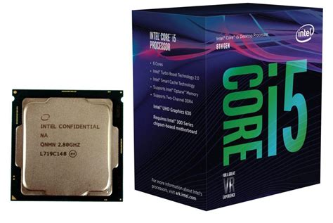
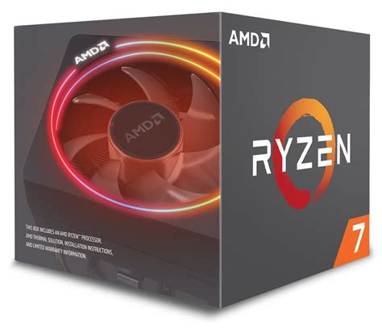

Intel i5

El intel i5 es un procesador de 6 nucleos y tiene una frecuencia de 2.9 GHz, perfecto si el pc que quieres montar sea barato pero tenga buenas capacidades de procesamiento y esta muy bien optimizado para los sistemas operativos Windows 11
AMD Ryzen 7

El AMD ryzen 7 es un procesador que puede ser overclockeado facilmente, tiene 8 nucleos y 16 hilos, es especialmente compatible con las memorias DDR4 y es una opcion mas cara pero mas potente del ryzen 5, para aquellos usuarios que quieran o necesiten una capacidad de procesado mayor